Loop Problem Solving
Patterns Making
Math Series
Sum of some numbers inputed by user
int main()
{
let n, i=1, num, sum=0, avg=0;
n=parseInt(prompt('Enter how many numbers to be inputed'))
while(i<=n){
num=Number(prompt('Enter a number'))
sum+=num;
i++;
}
avg=sum/n;
cosole.log(avg);
write a program to calculate average of 10 numbers using do...while
let i=1, num, sum=0, avg=0;
do{
sum=sum+i;
i++;
}while(i<=10);
console.log(sum)
Write a program to calculate square and cube of n integers
let i,n;
n=parseInt(prompt('Enter a number'))
i=1;
do{
console.log(`${i} pow(${i}, 2) = ${Math.pow(i,2)} and ${i} pow(${i}, 3) ${Math.pow(i,3)}`);
i++;
}while(i<=n);
write a program to list all the leap years from 1900 to 2100
let m=1900,n=2005;
do{
if(m%4==0){
console.log(`${m} is leap year`)
}
else{
console.log(`${m} is not leap year`)
}
m++;
}while(m<=n);
}
Write a program to count lower upper and numbers
let lower=0,upper=0,number=0, ch;
do{
ch=prompt('Enter character');
if(ch>='A' && ch<='Z'){
upper++;
}
if(ch>='a' && ch<='z'){
lower++;
}
if(ch>='0' && ch<='9'){
number++;
}
}while(ch!='*');
console.log(`lower: ${lower}, upper: ${upper}, number ${number}`)
sum and mean of all positives negatives
let pos=0, neg=0, sum_pos=0, sum_neg=0, num, mean_pos=0, mean_neg=0;
num=parseInt(prompt('Enter a number'))
do{
if(num>0){
sum_pos+=num;
pos++;
}
if(num<0){
sum_neg+=num;
neg++;
}
num=parseInt(prompt('Enter a number'))
}while(num!=-1);
mean_pos=sum_pos/pos;
mean_neg=sum_neg/neg;
consle.log("Mean of positives: ",mean_pos);
console.log("Mean of negative : ",mean_neg);
Odd and Even numbers from m range to n
let m,n;
m=parseInt(prompt('Enter starting point'));
n=parseInt(prompt('Enter ending point'));
for(int i=m;i<=n;i++){
if(i%2==0){
console.log("Even",i);
}
else{
console.log("Odd",i);
}
}
Facatorial of a numbaer
let fac=1,i,n;
n=parseInt(prompt('Factorial of: '))
if(n==0){
fac=1;
}
else{
for(i=1;i<=n;i++){
fac*=i;
}
}
console.log(`factorial of ${i} is ${fac}`);
If a number is prime number or not
let i,n,count=0;
n=parseInt(prompt('Enter a number'))
for(i=2; i<n/2; i++){
if(n%i==0){
count++;
break;
}
}
if(count==0){
console.log('Prime number')
}
else{
console.log('Not a prime number')
}
Count primes and non primes numbers
let i, n, count=0, primes=0, non_primes=0;
n=parseInt(prompt('Enter a number\nEnter -1 to exit'));
do{
for(i=2; i< n/2; i++){
if(n%2==0){
count=1;
break;
}
}
if(count==0){
primes++;
}
else{
non_primes++;
}
count=0;
n=parseInt(prompt('Enter a number'));
}while(n!=-1);
console.log("Number of primes",primes);
console.log("Number of nonPrimes: ",non_primes);
power of n
let i, num, n, result=1;
num=parseInt(prompt('Enter a number'));
n=parseInt(prompt('Till which power to calculate:'));
for(i=1;i<=n;i++){
result=result*num;
}
console.log(`power of (${num}, ${n}) is: ${result}`);
reverse a number
let num, rev;
num=parseInt(prompt('Enter a number'))
while(num!=0){
rev=num%10;
console.log('reversing process: ',rev)
num=(num/10).toFixed(0);
}
let n, reverse=0, rem;
n=parseInt(prompt('Enter a number'))
while(n!=0)
{
rem=n%10;
reverse=reverse*10+rem;
n/=10;
}
console.log('reversed number is: ',reverse);
let n, r = 0;
num=parseInt(prompt('Enter a number'))
while (n != 0)
{
r = r * 10;
r = r + n%10;
n = n/10;
}
console.log('reversed number is: ',reverse);
sum of digits
let n, sum=0, rem;
num=parseInt(prompt('Enter a number'));
while(n!=0)
{
rem=n%10;
sum=sum+rem;
n/=10;
}
console.log('sum is: ', sum);
decimal to binary
let num,rem,binary=0,i=0;
num=parseInt(prompt('Enter a number'))
while(num!=0){
rem=num%2;
binary=binary+rem*(pow(10,i));
num=num/2;
i++;
}
console.log(binary)
another version
let n;
let bin = 0;
let rem, i = 1, step = 1;
n=parseInt(prompt('Enter a number'))
while (n != 0) {
rem = n % 2;
console.log(`Step ${step++} : ${n}/2, Remainder = ${rem}, Quotient = ${n/2}`);
n /= 2;
bin += rem * i;
i *= 10;
}
console.log(bin)
Octal to decimal
let num,oct=0,i=1,rem;
num=parseInt(prompt('Enter a number'))
while(num!=0){
rem=num%8;
oct=oct+rem*i;
num/=8;
i*=10;
}
console.log(oct);
decimal to hexadecimal
let number,cnt,i;
let hex=[];
number=parseInt(prompt('Enter a number'))
cnt=0; //initialize index to zero
while(number>0)
{
switch(number%16)
{
case 10:
hex[cnt]='A'; break;
case 11:
hex[cnt]='B'; break;
case 12:
hex[cnt]='C'; break;
case 13:
hex[cnt]='D'; break;
case 14:
hex[cnt]='E'; break;
case 15:
hex[cnt]='F'; break;
default:
hex[cnt]=(number%16)+0x30; /*converted into char value*/
}
number=number/16;
cnt++;
}
//print value in reverse order
console.log("Hexadecimal value is: ");
for(i=(cnt-1); i>=0;i--){
console.log(hex[i]);
}
another version
let num, temp, rem, i=1, j;
let hexa =[];
num=parseInt(prompt('Enter any number'))
temp=num;
while(temp!=0){
rem=temp%16;
if(rem<10){
rem=rem+48;
}
else{
rem=rem+55;
}
hexa[i++]=rem;
temp=temp/16;
}
console.log('hexadecimal number is: ')
for(j=i-1;j>0;j--){
console.log(hexa[j]);
}
Binary to decimal
let deci_num=0,rem,binary,i=1;
binary=parseInt(prompt('Enter a number'))
while(binary!=0){
rem=binary%10;
deci_num=deci_num+rem*i;
binary=binary/10;
i*=2;
}
console.log(decimal_num);
Octal to decimal
let octal,decimal=0,i=0,rem;
octal=parseInt(prompt('Enter a number'))
while(octal!=0){
rem=octal%10;
decimal=decimal+rem*pow(8,i);
octal/=10;
i++;
//i*=8;
}
console.log("octal in decimal is: ",octal,decimal);
/* This function converts the octal number "octalnum" to the
* decimal number and returns it.
*/
let octalnum;
octalnum=parseInt(prompt('Enter a number'));
function octalToDecimal(octalnum)
{
let decimalnum = 0, temp = 0;
while(octalnum != 0)
{
decimalnum = decimalnum + (octalnum%10) * Math.pow(8,temp);
temp++;
octalnum = octalnum / 10;
}
return decimalnum;
}
let result=octalToDecimal(octalnum);
console.log(result);
Pattern Making Star
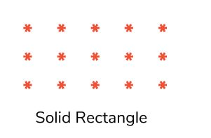
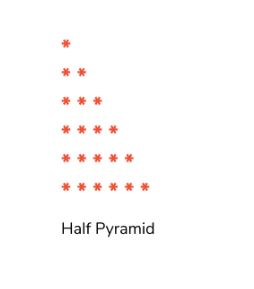
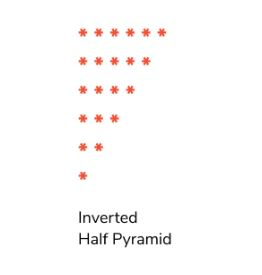
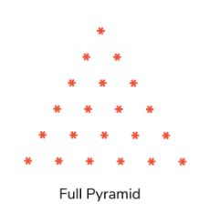
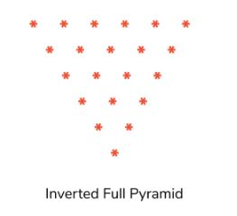
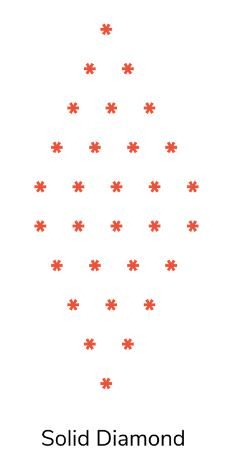
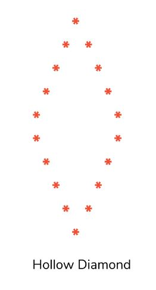
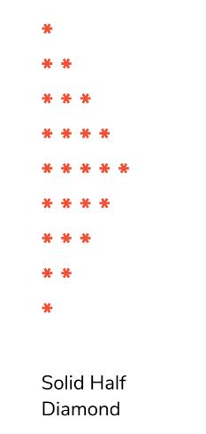
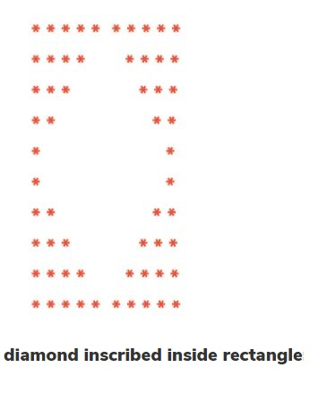
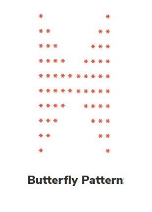
Pattern Making Number
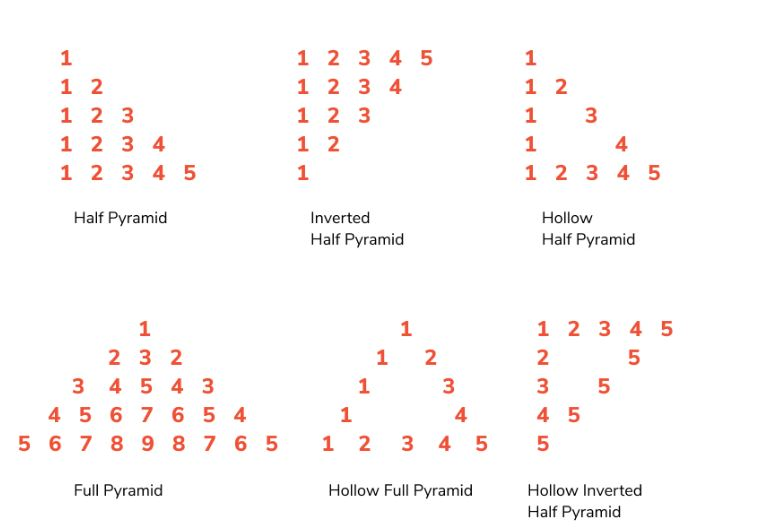
Pattern Making Alphabet
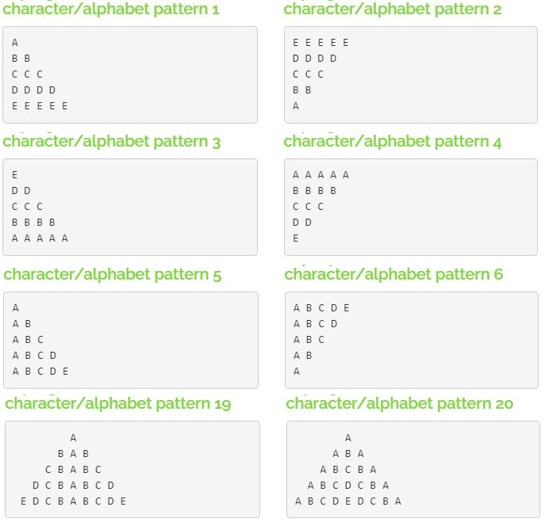
Sum of Series
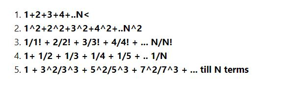
1+ 1/2 + 1/3+.....1/n
let n,i;
let a,sum=0;
n=parseInt(prompt('Till how');
for(i=1;i<=n;i++){
a=1/i;
sum=sum+a;
}
console.log(sum);
pow series
let n,i;
let a,sum=0;
n=parseInt(prompt('Till how');
for(i=1;i<=n;i++){
a=1/Math.pow(i,2);
sum=sum+a;
}
console.log(sum)